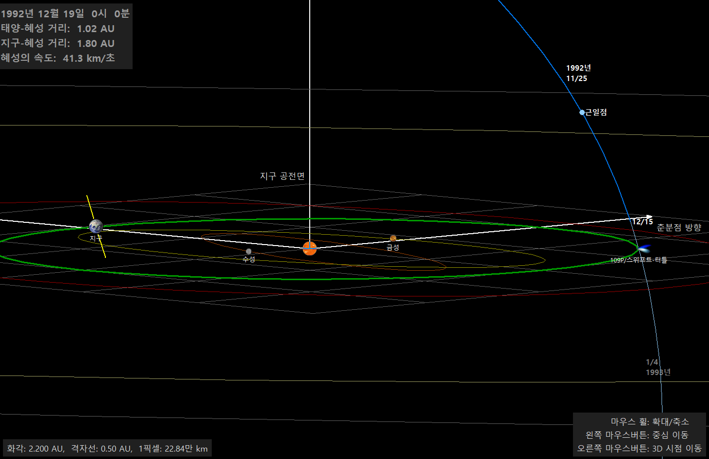
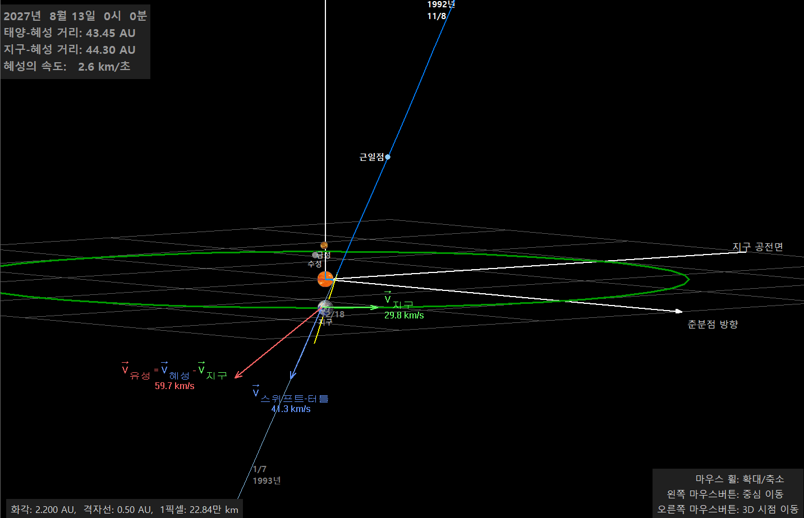
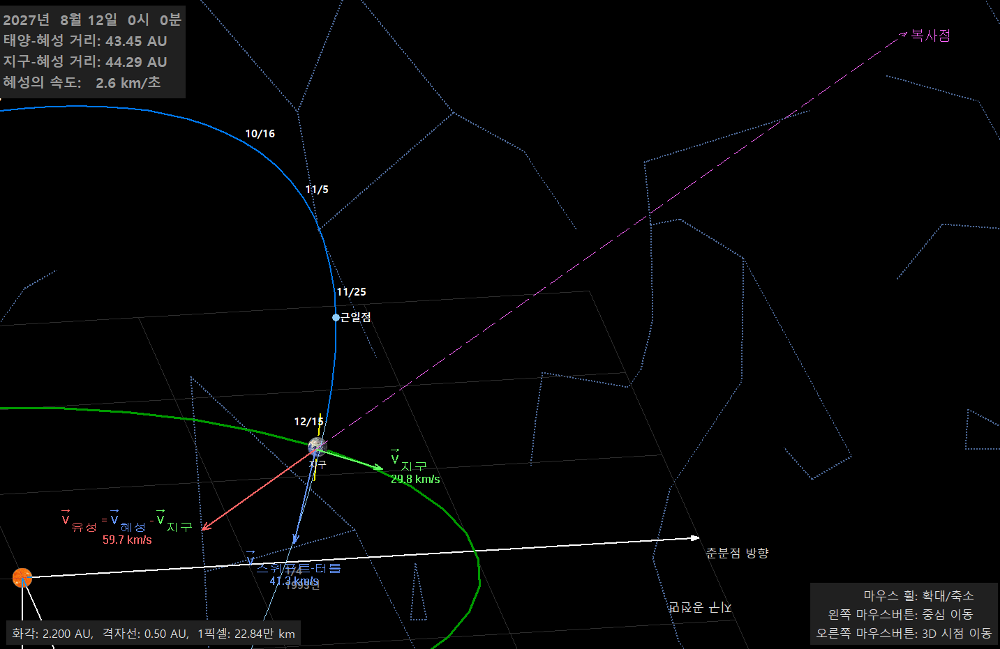

유성(별똥별)은 우주를 떠돌던 작은 티끌이 지구 대기에 뛰어들어 타면서 빛나는 현상이다.
그런데 해마다 거의 같은 날짜에, 하늘의 한 점에서 사방으로 쏟아지듯 유성이 많이 떨어지는 때가 있다.
이것을 유성우(流星雨, meteor shower)라고 하고, 유성이 퍼져 나오는 것처럼 보이는 점을 복사점(radiant)이라고 한다.
유성우의 정체는 바로 혜성이 남기고 간 먼지 부스러기이다.
가장 유명한 유성우인 8월의 페르세우스자리 유성우를 예로 들어, 별바라기의 3차원 태양계 화면으로 그 원리를 따라가 보자.
그림을 클릭하면 확대하여 볼 수 있다.
1. 혜성은 궤도를 따라 먼지를 뿌리고 다닌다
혜성은 얼음과 먼지가 뭉쳐진 '더러운 눈덩이'이다. 태양에 가까워지면 얼음이 승화하면서 그 속에 섞여 있던 먼지 알갱이들이 함께 떨어져 나온다.
떨어져 나온 먼지는 혜성과 거의 같은 속도로 혜성의 궤도를 따라 움직이므로, 시간이 지나면 혜성 궤도 전체에 먼지가 띠처럼 퍼지게 된다.
이 먼지의 띠를 유성체 흐름(meteoroid stream)이라고 한다.
페르세우스자리 유성우의 어미 혜성은 109P/스위프트-터틀 혜성이다.
공전 주기가 약 133년이고, 가장 최근에는 1992년 12월에 근일점을 지났다.
그림 1. 1992년 12월 19일, 스위프트-터틀 혜성이 근일점(11/25 부근)을 지나 지구 공전 궤도(초록색) 바로 옆을 통과하는 모습이다.
혜성의 궤도(파란색)는 지구 공전면을 거의 수직에 가깝게 뚫고 지나간다. 12월 15일 무렵 혜성이 지구 공전 궤도를 가로지르는 점을 눈여겨보자.
이때 지구는 태양 반대편에 있어서 혜성과 충돌할 일은 없었다. 하지만 혜성이 지나간 자리에는 먼지가 남는다.

그림 1. 1992년 12월 19일, 지구 공전 궤도 근처를 지나는 스위프트-터틀 혜성
2. 지구가 그 자리를 지나는 날 - 해마다 같은 날짜
지구는 1년에 한 번 태양을 돌기 때문에, 공전 궤도 위의 같은 위치를 해마다 같은 날짜에 지나간다.
스위프트-터틀 혜성의 궤도가 지구 공전 궤도를 가로지르는 그 지점을 지구가 통과하는 날이 바로 매년 8월 12~13일이다.
혜성 자신은 지금 태양에서 40 AU 이상 떨어진 먼 곳(그림 2 왼쪽 위 정보: 태양-혜성 거리 43.45 AU)을 여행하고 있지만,
궤도에 남겨진 먼지는 그 자리에 그대로 남아 있다. 지구가 이 먼지의 띠를 뚫고 지나가면서 먼지가 대기에 뛰어드는 것이 유성우이다.
이제 지구에서 볼 때 유성이 어느 방향, 어떤 속도로 날아오는지 계산해 보자.
먼지 알갱이(유성체)는 혜성의 속도로 움직이고, 지구는 지구의 공전 속도로 움직인다.
지구에 타고 있는 우리가 보는 유성의 속도는 둘의 상대 속도이다.
V유성 = V혜성 - V지구
그림 2. 파란색 화살표가 혜성(먼지)의 속도 V스위프트-터틀 = 41.3 km/s, 초록색 화살표가 지구의 공전 속도 V지구 = 29.8 km/s이다.
두 벡터의 차이인 빨간색 화살표가 지구에서 본 유성의 속도 V유성이며, 그 크기는 59.7 km/s이다.
실제로 관측된 페르세우스자리 유성의 대기 진입 속도도 약 59 km/s로, 계산과 잘 맞는다.
혜성의 궤도가 지구 공전면을 가파르게 뚫고 지나가기 때문에, 먼지는 지구 공전면의 위쪽(북쪽)에서 비스듬히 내려오며 지구와 만난다.
또 지구가 달려가는 방향과 거의 마주 보는 쪽에서 들어오므로 상대 속도가 각각의 속도보다 훨씬 커진다.

그림 2. 8월 13일, 지구가 혜성 궤도와 만나는 지점. 혜성·지구의 속도 벡터와 유성의 상대 속도 벡터
3. 복사점 - 유성이 날아온 방향을 거꾸로 따라가면
같은 유성체 흐름에 속한 먼지 알갱이들은 모두 거의 같은 방향, 같은 속도(V유성)로 지구에 쏟아진다.
즉, 유성들은 실제로는 서로 평행하게 날아온다.
기찻길이나 곧게 뻗은 도로가 멀리서 한 점으로 모이는 것처럼 보이듯이, 평행하게 날아오는 유성들도 원근 효과 때문에
하늘의 한 점에서 퍼져 나오는 것처럼 보인다. 이 점이 복사점이다.
그림 3. 빨간색 유성 속도 벡터(V유성)를 반대 방향으로 연장하면(분홍색 점선), 그 끝은 별자리 사이의 한 점을 가리킨다.
그 방향이 바로 페르세우스자리이다. 그래서 이 유성우의 이름이 '페르세우스자리 유성우(Perseids)'가 되었다.
복사점의 위치는 대략 적경 3h 04m, 적위 +58° 근처이다.
복사점은 유성우의 이름표이다. 유성우의 이름은 어미 혜성이 아니라 복사점이 있는 별자리(또는 별) 이름을 따서 붙인다.

그림 3. 유성의 속도 벡터를 거꾸로 추적하면 복사점이 페르세우스자리에 있다
정리: 유성우가 생기는 세 가지 조건
혜성이 태양에 다가올 때 먼지를 내뿜고, 그 먼지가 혜성 궤도를 따라 퍼진다.
그 혜성의 궤도가 지구 공전 궤도와 아주 가까이 지나간다. 지구가 그 지점을 지나는 날짜는 해마다 같다.
먼지는 모두 평행하게 날아오므로, 지구에서는 하늘의 한 점(복사점)에서 퍼져 나오는 것처럼 보인다.
유성의 속도는 혜성 속도와 지구 속도의 차이(V혜성 - V지구)로 결정된다.
핼리 혜성이 만드는 두 개의 유성우
76년마다 찾아오는 핼리 혜성은 다음 방문(2061년)까지 볼 수 없지만,
핼리 혜성의 먼지는 해마다 두 번씩 우리를 찾아온다.
핼리 혜성의 궤도가 지구 공전 궤도와 두 군데에서 가까이 지나가기 때문이다.
핼리 혜성의 근일점 거리는 0.59 AU로 지구 궤도(1 AU)보다 안쪽이다. 그래서 혜성은 지구 궤도 바깥에서 안쪽으로 들어왔다가(첫 번째 교차),
태양을 돌아 다시 바깥으로 나간다(두 번째 교차).
혜성의 궤도면은 지구 공전면과 약 162° 기울어져 있다. 즉, 거의 같은 평면에 있지만 지구와 반대 방향으로 도는 역행 궤도이다.
그래서 두 교차 지점 모두 궤도가 지구 궤도에 아주 가까이(약 0.07 AU, 0.15 AU) 다가온다.
지구가 첫 번째 지점을 지나는 5월 초에는 물병자리 에타 유성우, 두 번째 지점을 지나는 10월 하순에는 오리온자리 유성우가 나타난다.
그림 4. 핼리 혜성의 궤도가 지구 공전 궤도와 가까이 지나는 두 지점
물병자리 에타 유성우 (η-Aquariids)
활동 시기: 4월 하순 ~ 5월 하순, 극대 5월 6일 무렵
복사점: 물병자리 에타(η) 별 근처 (적경 약 22h 32m, 적위 약 -1°)
속도: 약 66 km/s. 역행 궤도의 먼지가 지구와 거의 정면으로 마주치기 때문에 페르세우스자리 유성우보다도 빠르다.
빠른 유성은 밝고, 지나간 자리에 연기 같은 흔적(유성흔)을 남기는 경우가 많다.
관측 팁: 복사점이 해 뜨기 2~3시간 전에야 동쪽 하늘에 떠오르므로 새벽에 관측한다.
남반구에서는 복사점이 높이 떠서 시간당 수십 개를 볼 수 있지만, 우리나라에서는 복사점이 낮아 수가 적다.
대신 지평선 가까운 복사점에서 하늘을 길게 가로지르는 '긴 꼬리 유성(earthgrazer)'을 볼 수 있다.
오리온자리 유성우 (Orionids)
활동 시기: 10월 초 ~ 11월 초, 극대 10월 21일 무렵
복사점: 오리온자리 베텔게우스의 북동쪽, 쌍둥이자리와의 경계 근처 (적경 약 6h 20m, 적위 약 +16°)
속도: 약 66 km/s로 물병자리 에타 유성우와 같다. 같은 핼리 혜성의 먼지이기 때문이다.
관측 팁: 복사점이 밤 10시~11시 무렵 동쪽에서 떠오르고, 새벽 3~4시 무렵 남쪽 하늘 높이 올라갈 때 가장 많이 보인다.
시간당 20개 안팎으로 많지는 않지만, 우리나라에서 관측하기 좋은 가을 유성우이다.
기타 사항
유성우는 대부분 자정 이후 새벽에 더 많이 보인다. 새벽에는 우리가 서 있는 쪽이 지구가 공전하는 방향(앞쪽)을 향하므로,
달리는 자동차의 앞유리에 빗방울이 더 많이 부딪히는 것처럼 더 많은 유성체와 만나기 때문이다.
복사점은 유성이 '시작되는' 곳이지 유성이 '보이는' 곳이 아니다. 유성은 복사점에서 30~60° 떨어진 하늘에서 길게 잘 보이므로,
복사점 하나만 보지 말고 하늘을 넓게 바라보자.
유성체 흐름은 혜성 궤도 위에 고르게 퍼져 있지 않다. 어미 혜성이 최근에 지나간 직후에는 먼지가 많아 유성우가 갑자기 많아지기도 한다.
1990년대 초 스위프트-터틀 혜성이 돌아온 뒤 페르세우스자리 유성우가 크게 늘었던 것이 그 예이다.
혜성의 궤도는 행성의 중력 때문에 조금씩 변하고, 오래된 먼지일수록 원래 궤도에서 많이 벗어난다.
그래서 실제 복사점은 혜성 궤도로 계산한 위치와 조금 다를 수 있고, 날마다 조금씩 이동한다.